Un huaylarsh.
Todo un legado.
El Huaylarsh es la fuerza de nuestra tierra, la alegría de nuestra gente y una historia que sigue viva en cada paso.
La Realeza Wanka nace del amor por nuestras costumbres y de la pasión por compartirlas. Somos una familia unida por el huaylarsh, el respeto a nuestras raíces y el orgullo de representar al Valle del Mantaro.
Ensayamos, creamos y salimos a escena para que nuestra cultura llegue a nuevas generaciones, sin perder la esencia que nos hace quienes somos.
Conoce a nuestra familiaMomentos que
nos hacen familia.
Cada presentación guarda una memoria. Estos son algunos pasos de nuestro camino juntos.
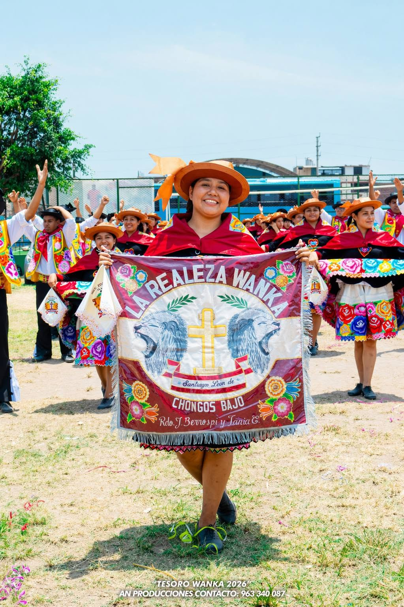
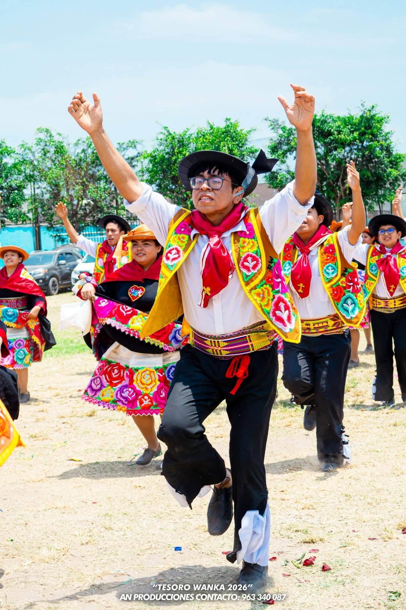
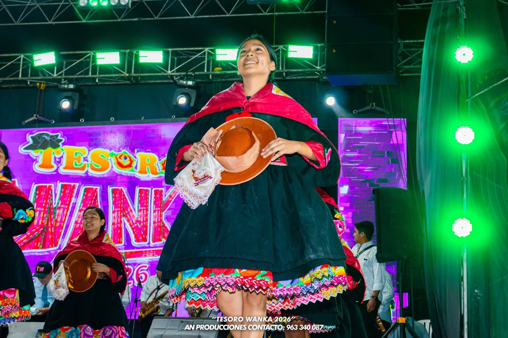
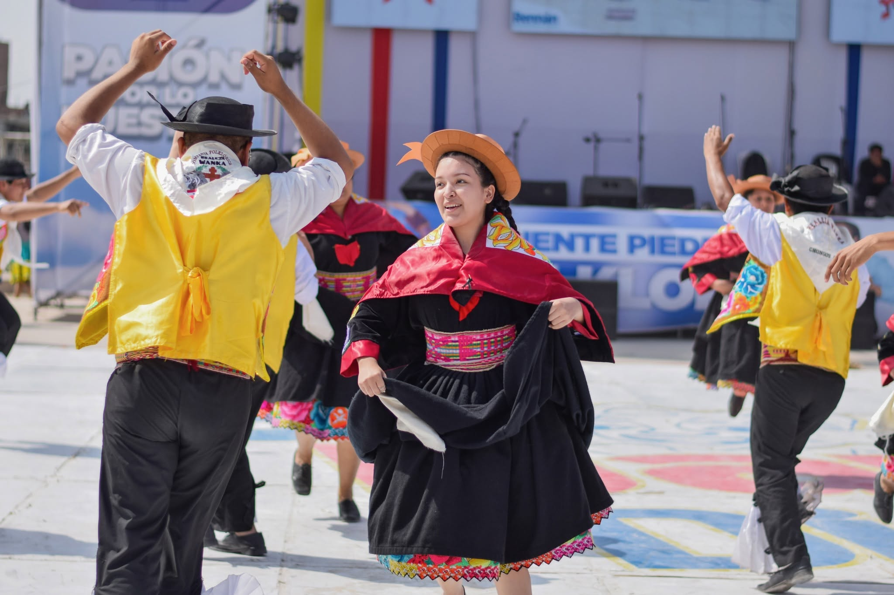
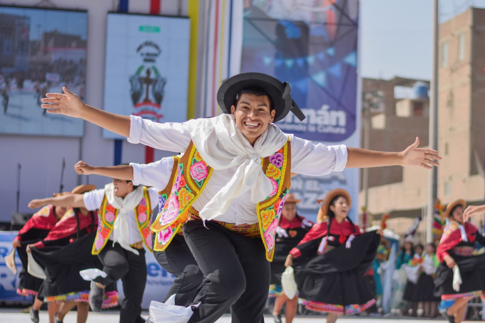
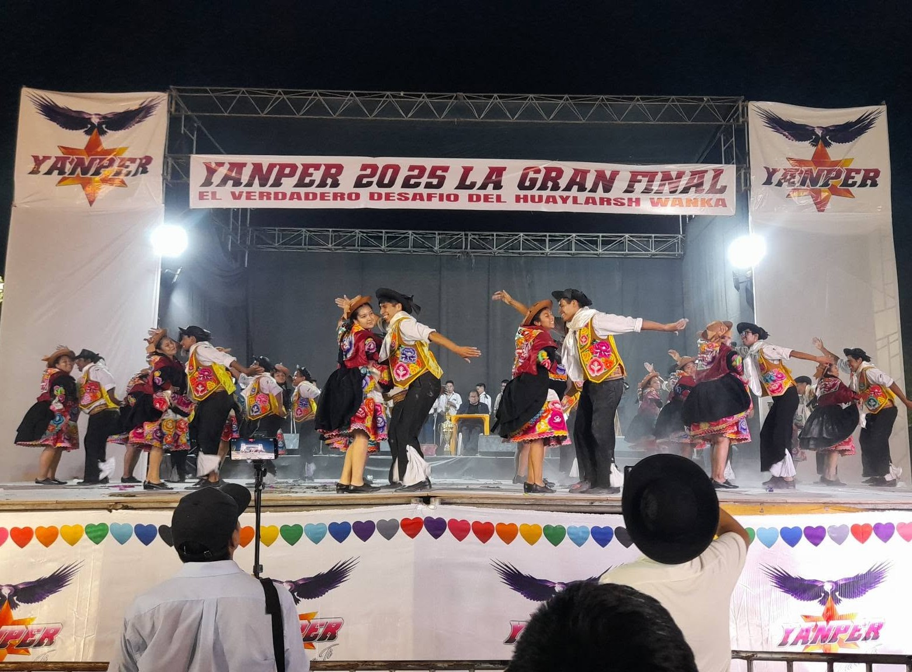
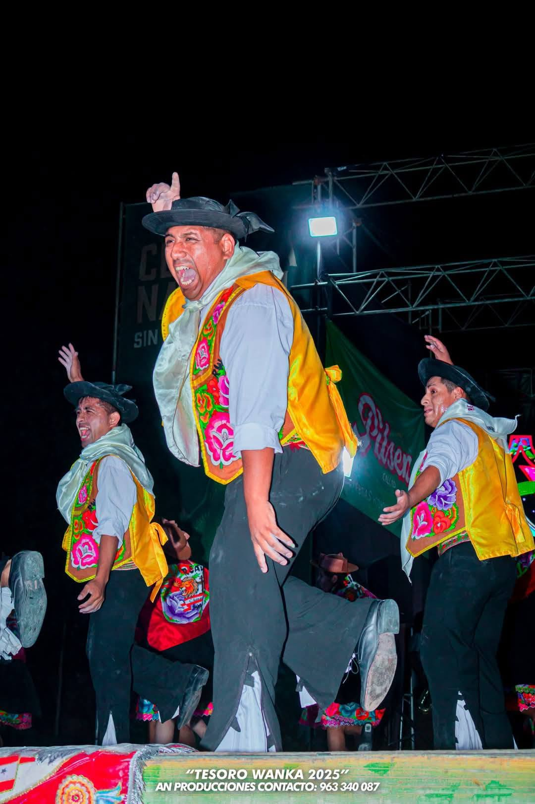
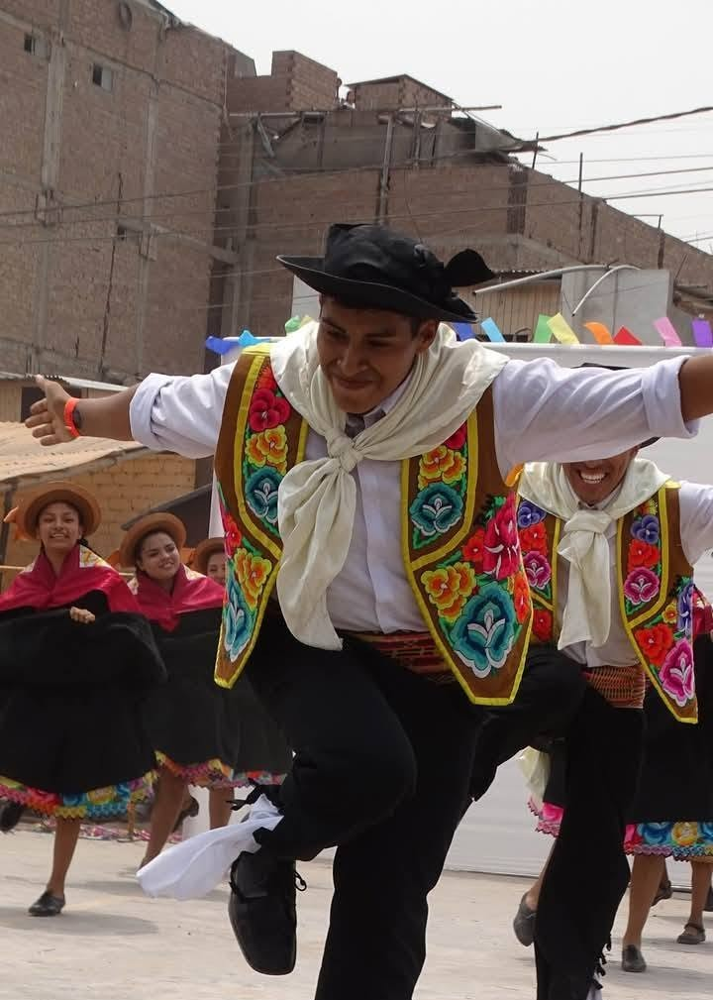
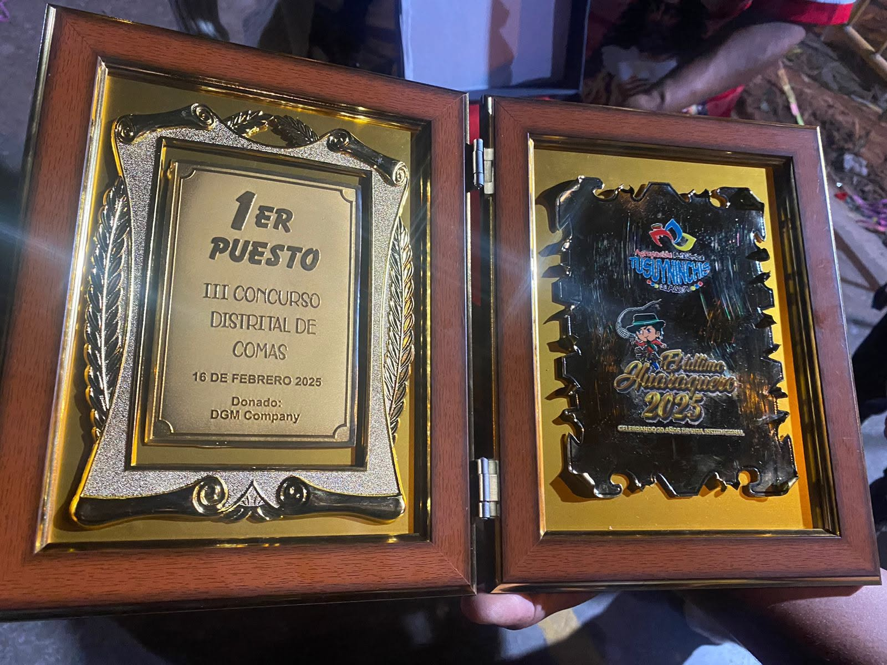
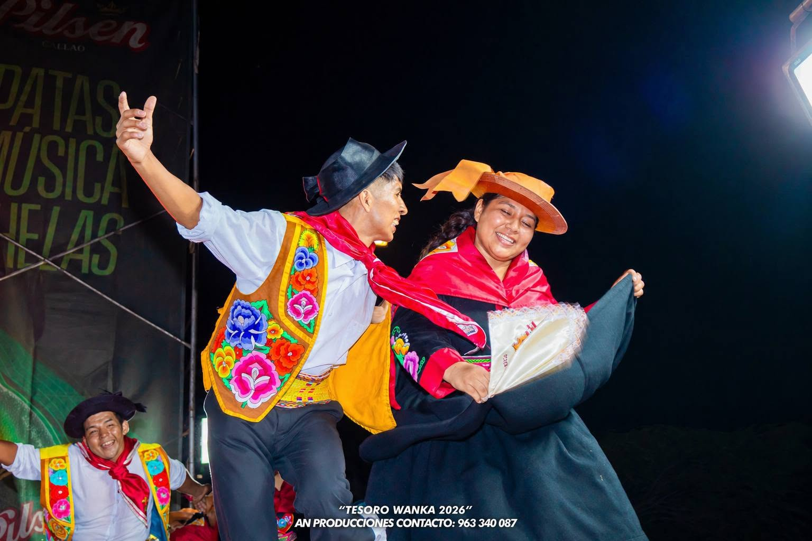
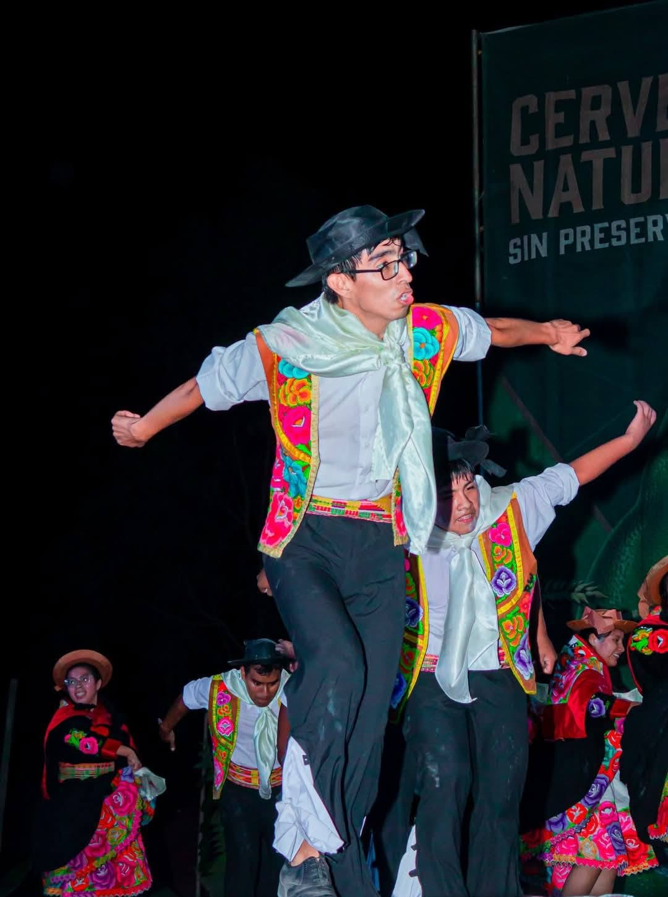
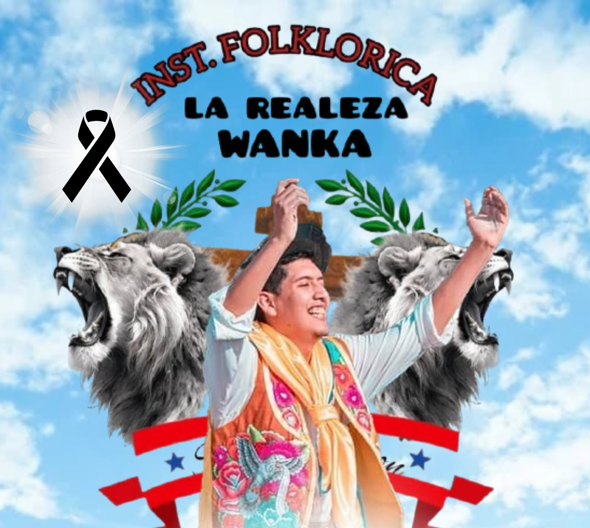
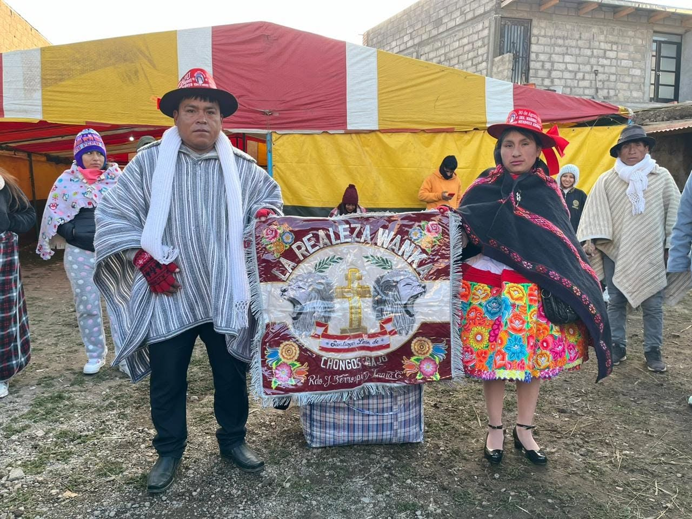
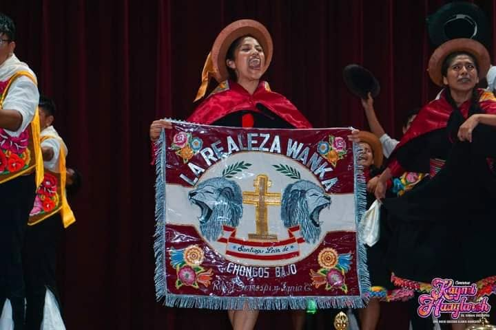
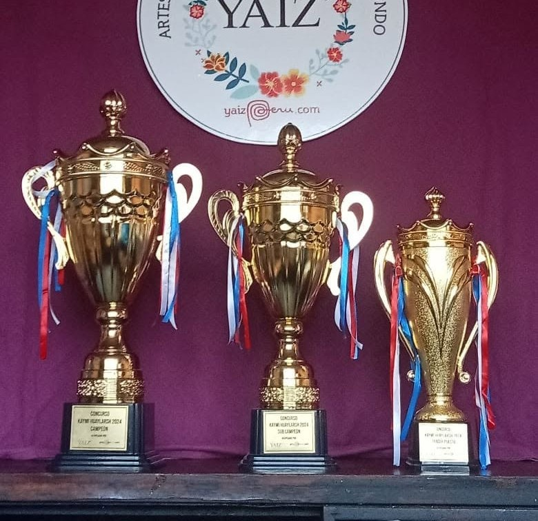
¿Bailamos
esta historia juntos?
Si sientes el llamado del huaylarsh, aquí hay un lugar para ti. Escríbenos y te contamos cómo formar parte de La Realeza Wanka.
Ven a conocernos.
Revisa el mapa donde ensayamos, te esperamos..!!!